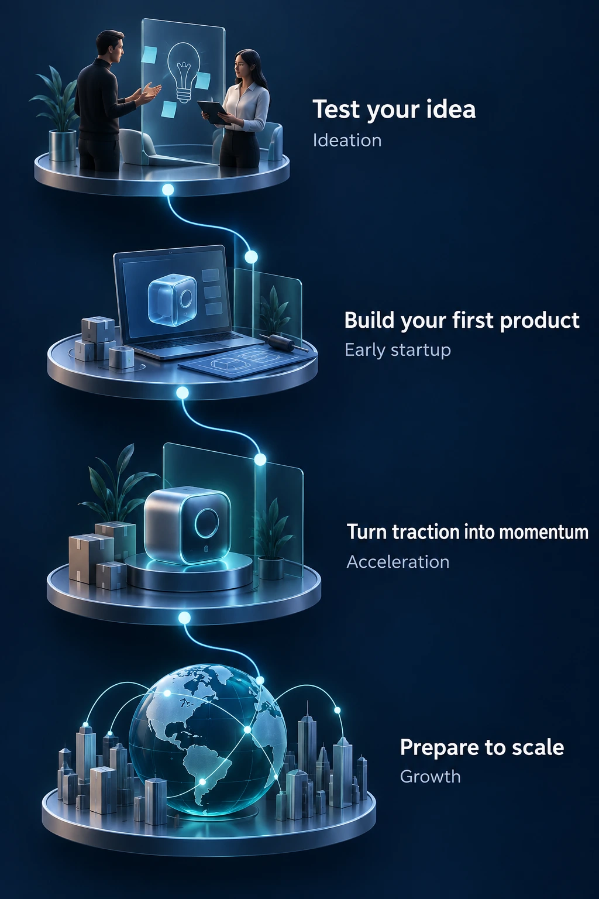

Pillar 04 · Accelerator
Build momentum.
Scale with purpose.
A structured pathway for selected startups, from ideation and validation to investor readiness and growth.

Start my founder journey
The Accelerator selects startups from Founders Lab. Investor introductions do not guarantee funding.
Featured Ventures
See what founders are building at AIC.
Featured AIC Venture
AIC Technology
Out of Box
From idea to real-world venture, built through the AIC ecosystem. Out of Box moved through the same journey every AIC venture takes: idea, build, validation, launch.
Idea→Build→Validate→Launch
ALEBEX AI
Built at AIC and deployed with real Canadian businesses, agentic AI for calls, bookings, follow-ups, and intake. Problem → product → deployment.
Explore ALEBEX AIGet in
Your next chapter starts in Founders Lab.
Join the community, build, and get discovered, selection for acceleration happens from inside the ecosystem.